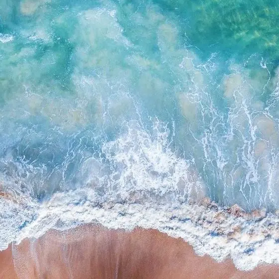
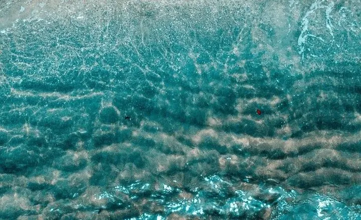
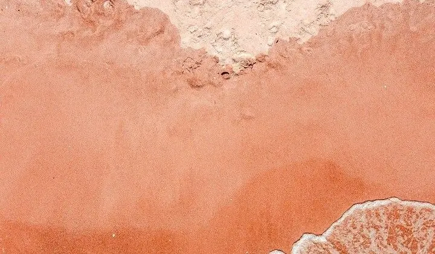
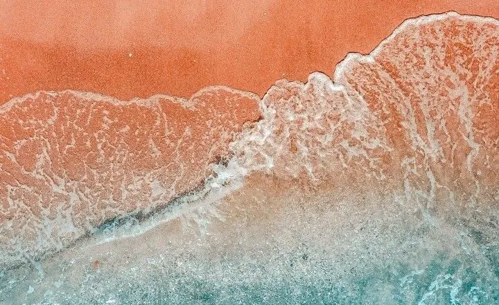
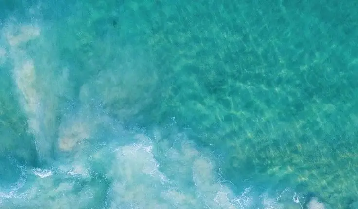
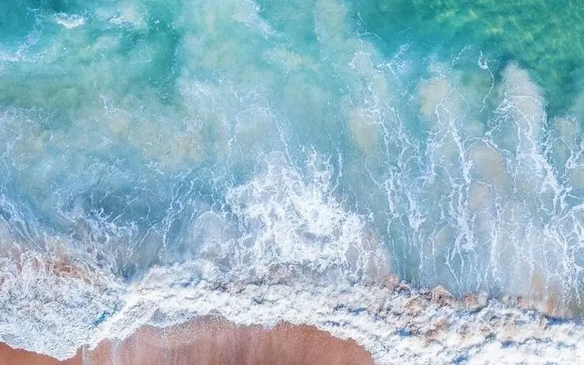
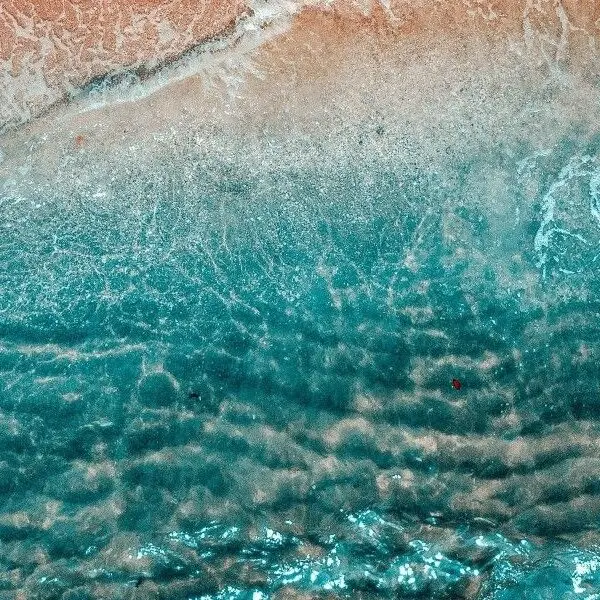

Planejamento e produção de eventos
Do conceito à execução, organizamos cada etapa para criar encontros coerentes com o propósito do projeto.
Conceito · Organização · Execução
Eventos · Relacionamento · Bem-estar
Criamos eventos e experiências de relacionamento e bem-estar que aproximam profissionais da saúde, marcas e comunidades.
Raízes gaúchas · Nascida no Rio de Janeiro · Perspectiva nacional
Quem somos
Uma conexão começa com atenção.
A Mar Conexões aproxima marcas, profissionais da saúde e pessoas por meio de eventos e experiências de relacionamento, lifestyle e bem-estar.
Nosso propósito é transformar encontros em experiências com conexão, pertencimento e atenção aos detalhes.
Com raízes gaúchas, a Mar Conexões nasceu no Rio de Janeiro e atua a partir daqui, com perspectiva de expansão nacional. Cada projeto parte da escuta e ganha forma a partir das pessoas que queremos aproximar.
Encontros que ganham significado.
Nossos serviços
Do primeiro conceito aos detalhes da entrega, conectamos planejamento, criação e relacionamento.

Do conceito à execução, organizamos cada etapa para criar encontros coerentes com o propósito do projeto.
Conceito · Organização · Execução
Encontros que valorizam a convivência, a qualidade de vida e o sentimento de comunidade.
Convivência · Lifestyle · Bem-estar
Desenvolvemos propostas de patrocínio e experiências alinhadas às marcas, ao contexto e ao público.
Patrocínio · Relacionamento · Ativações
Planejamos e criamos conteúdo para Instagram e TikTok, integrado aos objetivos de cada projeto.
Planejamento · Instagram · TikTokPara quem criamos
Projetos que respeitam a identidade de cada marca e o contexto de cada público.
Como trabalhamos
Um caminho compartilhado, com clareza em cada etapa e atenção ao que faz sentido para o projeto.

1Escutamos o que importa para definir a direção do projeto.

2Conectamos conceito, formato e detalhes ao propósito do encontro.

3Organizamos as etapas e acompanhamos a realização de cada entrega.
Revisamos o caminho percorrido para orientar os próximos projetos.
Clientes
Marcas e profissionais com quem construímos encontros e experiências.
Novos projetos e parcerias
Um evento, uma experiência ou uma parceria de marca. O próximo encontro pode começar com uma boa ideia.
A Mar Conexões está aberta a novos projetos e parcerias no universo da saúde e do bem-estar.